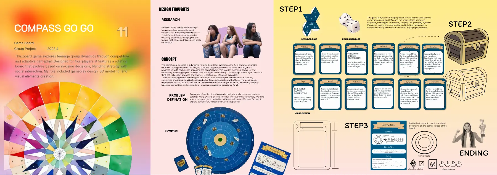

简介
我们小组研究了青少年怎样在合作和竞争之间找平衡，再把它做成一款游戏：棋盘会随着玩家的行动旋转，还有资源、事件卡、骰子和胜利条件。
我负责的部分
我负责玩法设计、3D 建模和视觉元素。调研、概念和规则是大家一起完成的。


四人策略桌游，棋盘会旋转，主题是青少年之间怎样合作、怎样竞争。
我们小组研究了青少年怎样在合作和竞争之间找平衡，再把它做成一款游戏：棋盘会随着玩家的行动旋转，还有资源、事件卡、骰子和胜利条件。
我负责玩法设计、3D 建模和视觉元素。调研、概念和规则是大家一起完成的。
